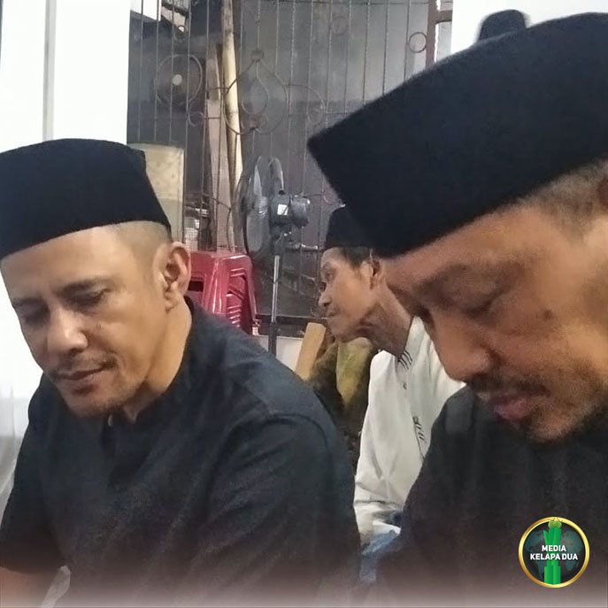

Berita Pilihan

Maulid Nabi Muhammad SAW di Mushollah Al Hidayah
Tanggal, 10 Oktober 2026
MediaKada | Kegiatan peringatan Maulid Nabi Muhammad SAW 1448 Hijriah berlangsung khidmat di Mushollah Al Hidayah RT 002/RW 08, Kelurahan Kelapa Dua, pada Selasa (10/10) malam. Acara tersebut menghadirkan penceramah K.H. Auzia Mahfudz Asirun, Lc., M.A. serta qori K.H. Hilmi Fuad, S.Q.
Turut hadir dalam kegiatan tersebut Ketua Mushollah Al Hidayah H. Abdul Karim H. Mugeni, para tokoh masyarakat dan tokoh agama, Ketua RW 08, LMK-08, FKDM, para Ketua RT di lingkungan RW 08, pengurus mushollah dan masjid dilingkungan RW 08 dan sekitarnya, serta jamaah Mushollah Al Hidayah
Dalam tausiyahnya, K.H. Auzia Mahfudz Asirun, Lc., M.A. mengingatkan pentingnya menanamkan nilai-nilai agama sejak usia dini sebagai fondasi utama dalam membentuk karakter, moral, dan spiritual anak. Menurutnya, pendidikan agama yang kuat akan membantu anak tumbuh menjadi pribadi yang berakhlak mulia serta mampu menghadapi berbagai tantangan kehidupan di masa depan.
Suasana peringatan Maulid Nabi Muhammad SAW semakin semarak dengan penampilan Team Hadroh Al Hidayah yang membawakan lantunan shalawat. Keceriaan jamaah juga semakin terasa melalui pantun-pantun menghibur yang disampaikan oleh pembawa acara, sehingga rangkaian kegiatan berlangsung dengan khidmat, hangat, dan penuh kebersamaan.

Sosialisasi Teknologi Wolbachia Pengendalian DBD di RW 08 Kelapa Dua